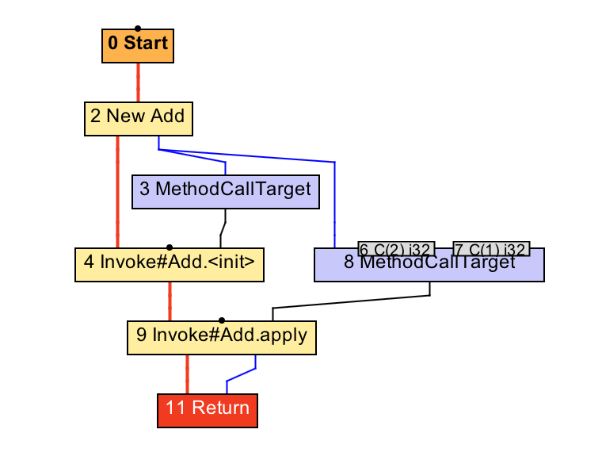
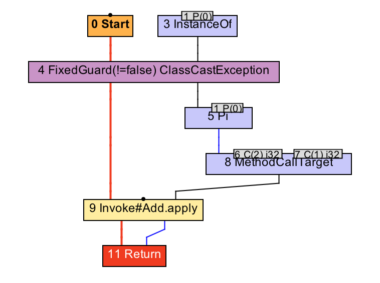
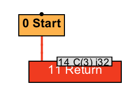
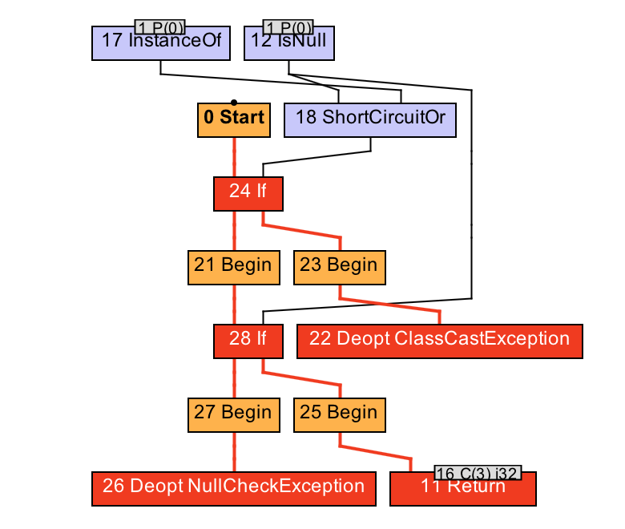
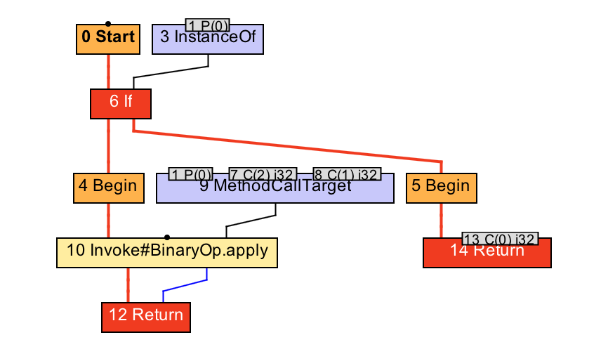
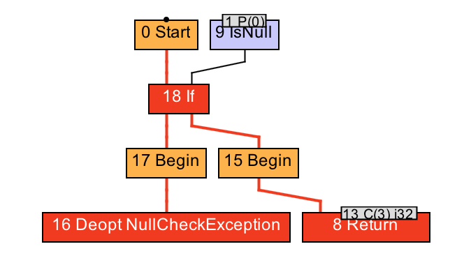
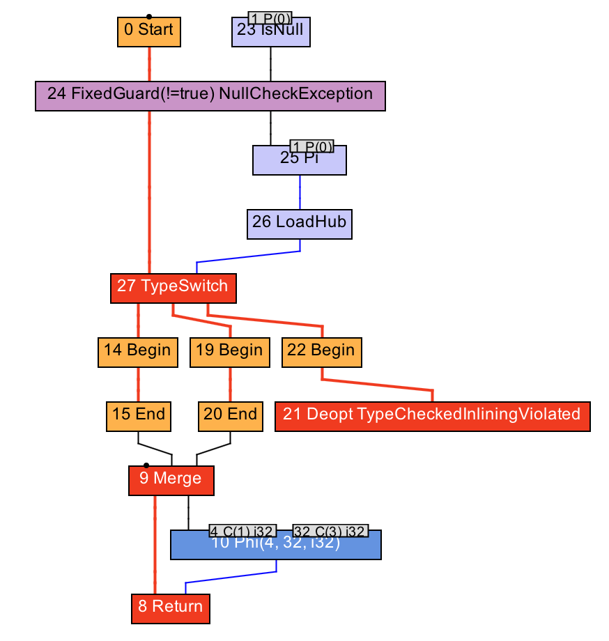
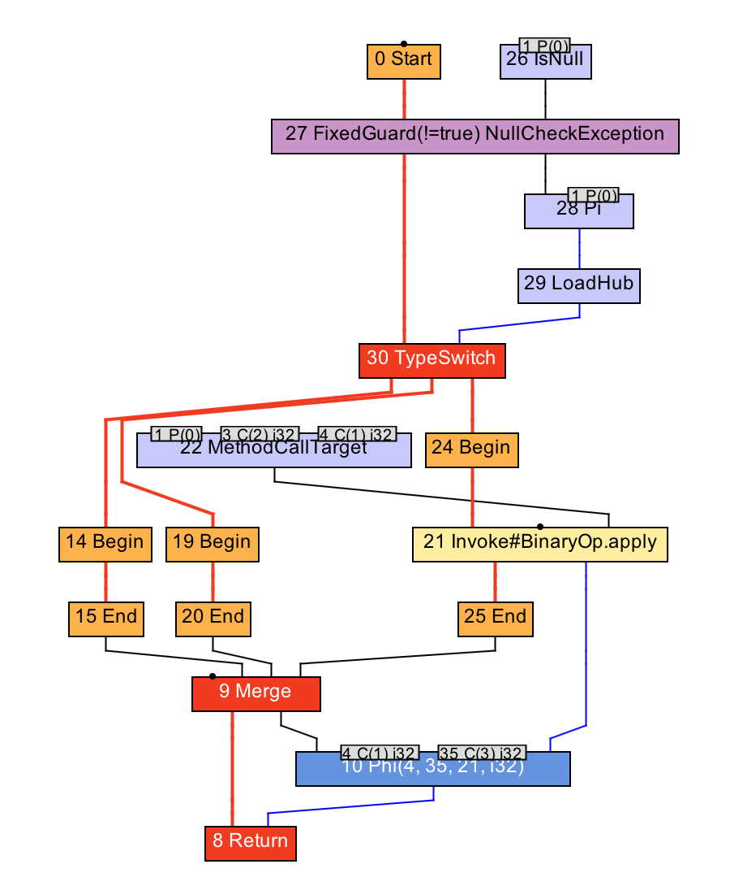

- 00 开篇词 为什么我们要学习Java虚拟机？.md.html
- 01 Java代码是怎么运行的？.md.html
- 02 Java的基本类型.md.html
- 03 Java虚拟机是如何加载Java类的.md.html
- 04 JVM是如何执行方法调用的？（上）.md.html
- 05 JVM是如何执行方法调用的？（下）.md.html
- 06 JVM是如何处理异常的？.md.html
- 07 JVM是如何实现反射的？.md.html
- 08 JVM是怎么实现invokedynamic的？（上）.md.html
- 09 JVM是怎么实现invokedynamic的？（下）.md.html
- 10 Java对象的内存布局.md.html
- 11 垃圾回收（上）.md.html
- 12 垃圾回收（下）.md.html
- 13 Java内存模型.md.html
- 14 Java虚拟机是怎么实现synchronized的？.md.html
- 15 Java语法糖与Java编译器.md.html
- 16 即时编译（上）.md.html
- 17 即时编译（下）.md.html
- 18 即时编译器的中间表达形式.md.html
- 19 Java字节码（基础篇）.md.html
- 20 方法内联（上）.md.html
- 21 方法内联（下）.md.html
- 22 HotSpot虚拟机的intrinsic.md.html
- 23 逃逸分析.md.html
- 24 字段访问相关优化.md.html
- 25 循环优化.md.html
- 26 向量化.md.html
- 27 注解处理器.md.html
- 28 基准测试框架JMH（上）.md.html
- 29 基准测试框架JMH（下）.md.html
- 30 Java虚拟机的监控及诊断工具（命令行篇）.md.html
- 31 Java虚拟机的监控及诊断工具（GUI篇）.md.html
- 32 JNI的运行机制.md.html
- 33 Java Agent与字节码注入.md.html
- 34 Graal：用Java编译Java.md.html
- 35 Truffle：语言实现框架.md.html
- 36 SubstrateVM：AOT编译框架.md.html
- 尾声丨道阻且长，努力加餐.html.md.html
- 工具篇 常用工具介绍.md.html
21 方法内联（下）
在上一篇中，我举的例子都是静态方法调用，即时编译器可以轻易地确定唯一的目标方法。
然而，对于需要动态绑定的虚方法调用来说，即时编译器则需要先对虚方法调用进行去虚化（devirtualize），即转换为一个或多个直接调用，然后才能进行方法内联。
即时编译器的去虚化方式可分为完全去虚化以及条件去虚化（guarded devirtualization）。
完全去虚化是通过类型推导或者类层次分析（class hierarchy analysis），识别虚方法调用的唯一目标方法，从而将其转换为直接调用的一种优化手段。它的关键在于证明虚方法调用的目标方法是唯一的。
条件去虚化则是将虚方法调用转换为若干个类型测试以及直接调用的一种优化手段。它的关键在于找出需要进行比较的类型。
在介绍具体的去虚化方式之前，我们先来看一段代码。这里我定义了一个抽象类 BinaryOp，其中包含一个抽象方法 apply。BinaryOp 类有两个子类 Add 和 Sub，均实现了 apply 方法。
abstract class BinaryOp {
public abstract int apply(int a, int b);
}
class Add extends BinaryOp {
public int apply(int a, int b) {
return a + b;
}
}
class Sub extends BinaryOp {
public int apply(int a, int b) {
return a - b;
}
}
下面我便用这个例子来逐一讲解这几种去虚化方式。
基于类型推导的完全去虚化
基于类型推导的完全去虚化将通过数据流分析推导出调用者的动态类型，从而确定具体的目标方法。
public static int foo() {
BinaryOp op = new Add();
return op.apply(2, 1);
}
public static int bar(BinaryOp op) {
op = (Add) op;
return op.apply(2, 1);
}
举个例子，上面这段代码中的 foo 方法和 bar 方法均会调用 apply 方法，且调用者的声明类型皆为 BinaryOp。这意味着 Java 编译器会将其编译为 invokevirtual 指令，调用 BinaryOp.apply 方法。
前两篇中我曾提到过，在 Sea-of-Nodes 的 IR 系统中，变量不复存在，取而代之的是具体值。这些具体值的类型往往要比变量的声明类型精确。 
foo 方法的 IR 图（方法内联前）

bar 方法的 IR 图（方法内联前）
在上面两张 IR 图中，方法调用的调用者（即 8 号 CallTarget 节点的第一个依赖值）分别为 2 号 New 节点，以及 5 号 Pi 节点。后者可以简单看成强制转换后的精确类型。由于这两个节点的类型均被精确为 Add 类，因此，原 invokevirtual 指令对应的 9 号 invoke 节点都被识别对 Add.apply 方法的调用。
经过对该具体方法的内联之后，对应的 IR 图如下所示：

foo 方法的 IR 图（方法内联及逃逸分析后）

bar 方法的 IR 图（方法内联后）
可以看到，通过将字节码转换为 Sea-of-Nodes IR 之后，即时编译器便可以直接去虚化，并将唯一的目标方法进一步内联进来。
public static int notInlined(BinaryOp op) {
if (op instanceof Add) {
return op.apply(2, 1);
}
return 0;
}
不过，对于上面这段代码中的 notInlined 方法，尽管理论上即时编译器能够推导出调用者的动态类型为 Add，但是 C2 和 Graal 都没有这么做。
其原因在于类型推导属于全局优化，本身比较浪费时间；另一方面，就算不进行基于类型推导的完全去虚化，也有接下来的基于类层次分析的去虚化，以及条件去虚化兜底，覆盖大部分的代码情况。

notInlined 方法的 IR 图（方法内联失败后）
因此，C2 和 Graal 决定，如果生成 Sea-of-Nodes IR 后，调用者的动态类型已能够直接确定，那么就进行这项去虚化。如果需要额外的数据流分析方能确定，那么干脆不做，以节省编译时间，并依赖接下来的去虚化手段进行优化。
基于类层次分析的完全去虚化
基于类层次分析的完全去虚化通过分析 Java 虚拟机中所有已被加载的类，判断某个抽象方法或者接口方法是否仅有一个实现。如果是，那么对这些方法的调用将只能调用至该具体实现中。
在上面的例子中，假设在编译 foo、bar 或 notInlined 方法时，Java 虚拟机仅加载了 Add。那么，BinaryOp.apply 方法只有 Add.apply 这么一个具体实现。因此，当即时编译器碰到对 BinaryOp.apply 的调用时，便可直接内联 Add.apply 的内容。
那么问题来了，即时编译器如何保证在今后的执行过程中，BinaryOp.apply 方法还是只有 Add.apply 这么一个具体实现呢？
事实上，它无法保证。因为 Java 虚拟机有可能在上述编译完成之后加载 Sub 类，从而引入另一个 BinaryOp.apply 方法的具体实现 Sub.apply。
Java 虚拟机的做法是为当前编译结果注册若干个假设（assumption），假定某抽象类只有一个子类，或者某抽象方法只有一个具体实现，又或者某类没有子类等。
之后，每当新的类被加载，Java 虚拟机便会重新验证这些假设。如果某个假设不再成立，那么 Java 虚拟机便会对其所属的编译结果进行去优化。
public static int test(BinaryOp op) {
return op.apply(2, 1);
}
以上面这段代码中的 test 方法为例。假设即时编译的时候，如果类层次分析得出 BinaryOp 类只有 Add 一个子类的结论，那么即时编译器可以注册一个假设，假定抽象方法 BinaryOp.apply 有且仅有 Add.apply 这个具体实现。
基于这个假设，原虚方法调用便可直接被去虚化为对 Add.apply 方法的调用。如果在之后的运行过程中，Java 虚拟机又加载了 Sub 类，那么该假设失效，Java 虚拟机需要触发 test 方法编译结果的去优化。
public static int test(Add op) {
return op.apply(2, 1); // 仍需添加假设
}
事实上，即便调用者的声明类型为 Add，即时编译器仍需为之添加假设。这是因为 Java 虚拟机不能保证没有重写了 apply 方法的 Add 类的子类。
为了保证这里 apply 方法的语义，即时编译器需要假设 Add 类没有子类。当然，通过将 Add 类标注为 final，可以避开这个问题。
可以看到，即时编译器并不要求目标方法使用 final 修饰符。只要目标方法事实上是 final 的（effective final），便可以进行相应的去虚化以及内联。
不过，如果使用了 final 修饰符，即时编译器便可以不用生成对应的假设。这将使编译结果更加精简，并减少类加载时所需验证的内容。

test 方法的 IR 图（方法内联后）
让我们回到原本的例子中。从 test 方法的 IR 图可以看出，生成的代码无须检测调用者的动态类型是否为 Add，便直接执行内联之后的 Add.apply 方法中的内容（2+1 经过常量折叠之后得到 3，对应 13 号常数节点）。这是因为动态类型检测已被移至假设之中了。
然而，对于接口方法调用，该去虚化手段则不能移除动态类型检测。这是因为在执行 invokeinterface 指令时，Java 虚拟机必须对调用者的动态类型进行测试，看它是否实现了目标接口方法所在的接口。
Java 类验证器将接口类型直接看成 Object 类型，所以有可能出现声明类型为接口，实际类型没有继承该接口的情况，如下例所示。
// A.java
interface I {}
public class A {
public static void test(I obj) {
System.out.println("Hello World");
}
public static void main(String[] args) {
test(new B());
}
}
// B.java
public class B implements I { }
// Step 1: compile A.java and B.java
// Step 2: remove "implements I" from B.java, and compile B.java
// Step 3: run A
既然这一类型测试无法避免，C2 干脆就不对接口方法调用进行基于类层次分析的完全去虚化，而是依赖于接下来的条件去虚化。
条件去虚化
前面提到，条件去虚化通过向代码中添加若干个类型比较，将虚方法调用转换为若干个直接调用。
具体的原理非常简单，是将调用者的动态类型，依次与 Java 虚拟机所收集的类型 Profile 中记录的类型相比较。如果匹配，则直接调用该记录类型所对应的目标方法。
public static int test(BinaryOp op) {
return op.apply(2, 1);
}
我们继续使用前面的例子。假设编译时类型 Profile 记录了调用者的两个类型 Sub 和 Add，那么即时编译器可以据此进行条件去虚化，依次比较调用者的动态类型是否为 Sub 或者 Add，并内联相应的方法。其伪代码如下所示：
public static int test(BinaryOp op) {
if (op.getClass() == Sub.class) {
return 2 - 1; // inlined Sub.apply
} else if (op.getClass() == Add.class) {
return 2 + 1; // inlined Add.apply
} else {
... // 当匹配不到类型 Profile 中的类型怎么办？
}
}
如果遍历完类型 Profile 中的所有记录，仍旧匹配不到调用者的动态类型，那么即时编译器有两种选择。
第一，如果类型 Profile 是完整的，也就是说，所有出现过的动态类型都被记录至类型 Profile 之中，那么即时编译器可以让程序进行去优化，重新收集类型 Profile，对应的 IR 图如下所示（这里 27 号 TypeSwitch 节点等价于前面伪代码中的多个 if 语句）： 
当匹配不到动态类型时进行去优化
第二，如果类型 Profile 是不完整的，也就是说，某些出现过的动态类型并没有记录至类型 Profile 之中，那么重新收集并没有多大作用。此时，即时编译器可以让程序进行原本的虚调用，通过内联缓存进行调用，或者通过方法表进行动态绑定。对应的 IR 图如下所示：

当匹配不到动态类型时进行虚调用（仅在 Graal 中使用。）
在 C2 中，如果类型 Profile 是不完整的，即时编译器压根不会进行条件去虚化，而是直接使用内联缓存或者方法表。
总结与实践
今天我介绍了即时编译器去虚化的几种方法。
完全去虚化通过类型推导或者类层次分析，将虚方法调用转换为直接调用。它的关键在于证明虚方法调用的目标方法是唯一的。
条件去虚化通过向代码中增添类型比较，将虚方法调用转换为一个个的类型测试以及对应该类型的直接调用。它将借助 Java 虚拟机所收集的类型 Profile。
今天的实践环节，我们来重现因类加载导致去优化的过程。
// Run with java -XX:CompileCommand='dontinline JITTest.test' -XX:+PrintCompilation JITTest
public class JITTest {
static abstract class BinaryOp {
public abstract int apply(int a, int b);
}
static class Add extends BinaryOp {
public int apply(int a, int b) {
return a + b;
}
}
static class Sub extends BinaryOp {
public int apply(int a, int b) {
return a - b;
}
}
public static int test(BinaryOp op) {
return op.apply(2, 1);
}
public static void main(String[] args) throws Exception {
Add add = new Add();
for (int i = 0; i < 400_000; i++) {
test(add);
}
Thread.sleep(2000);
System.out.println("Loading Sub");
Sub[] array = new Sub[0]; // Load class Sub
// Expect output: "JITTest::test (7 bytes) made not entrant"
Thread.sleep(2000);
}
}